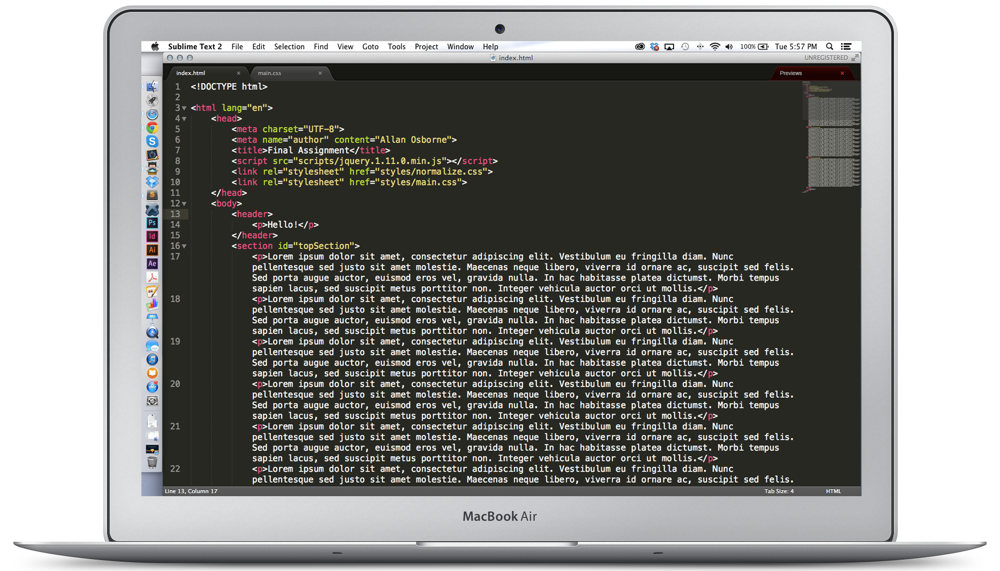

Sublime's Site Overview Plugin allows for easy editing. It allows you to not have a browser open when your are coding.
For example, when you save everytime, you have to go back to the browser that you are currently working on and refreshing it to see your latest changes.
With the Site Overview Plugin, there's no need to refresh your browser, let alone not needing a browser. It'll update everytime you edit code.
Gallery
Here's a list of Internet Browsers that the plugin is available to be used with: